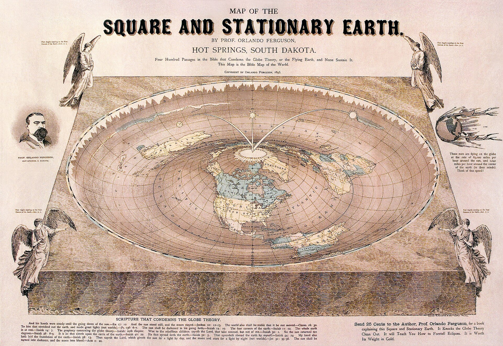
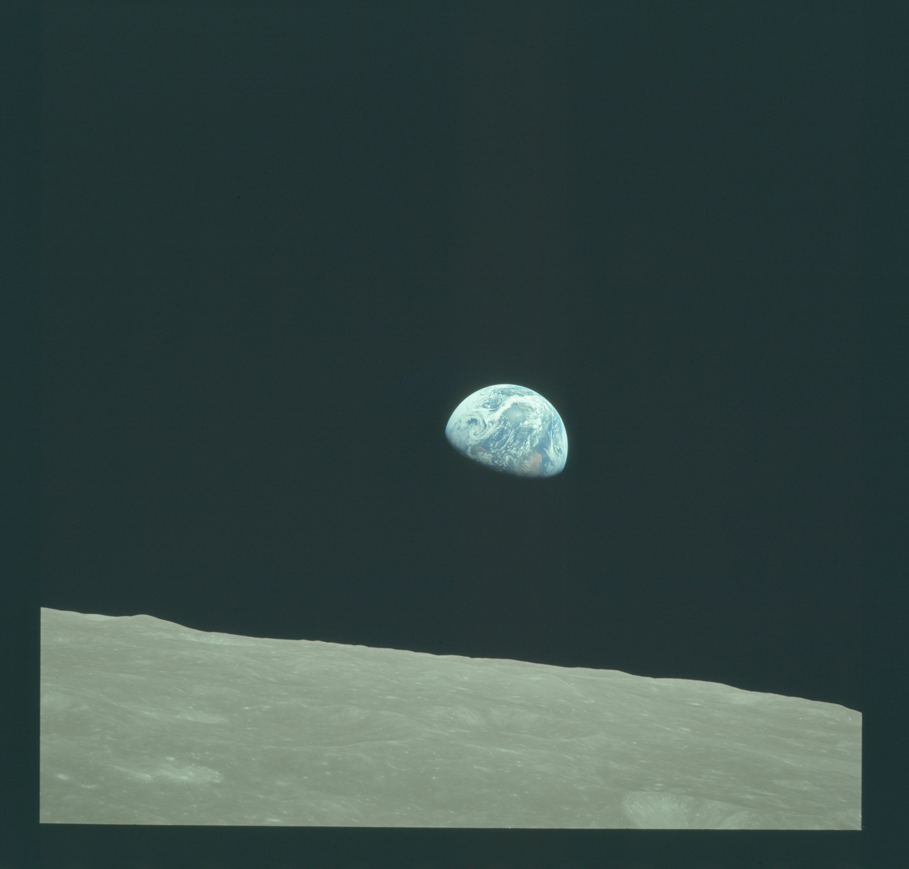
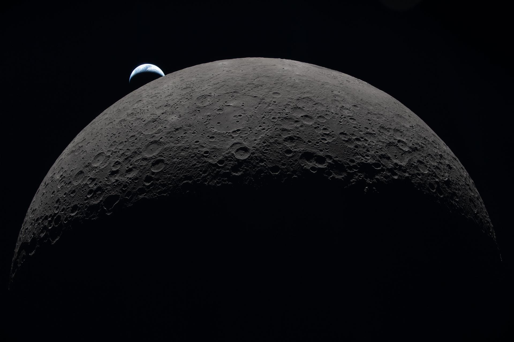
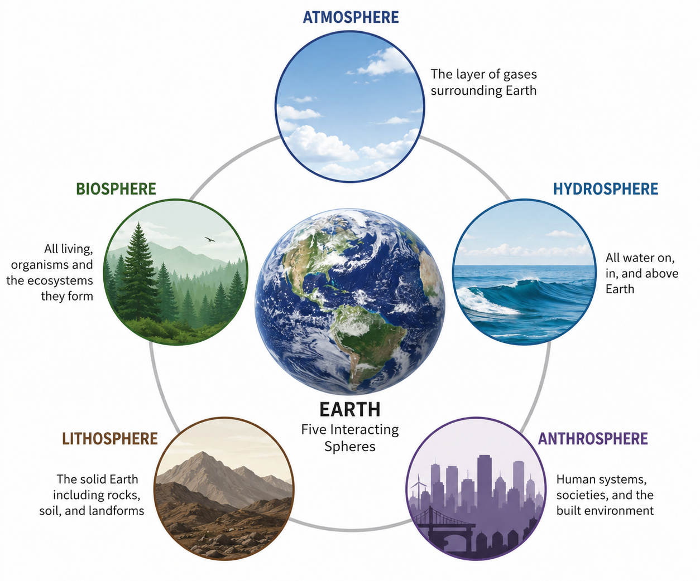
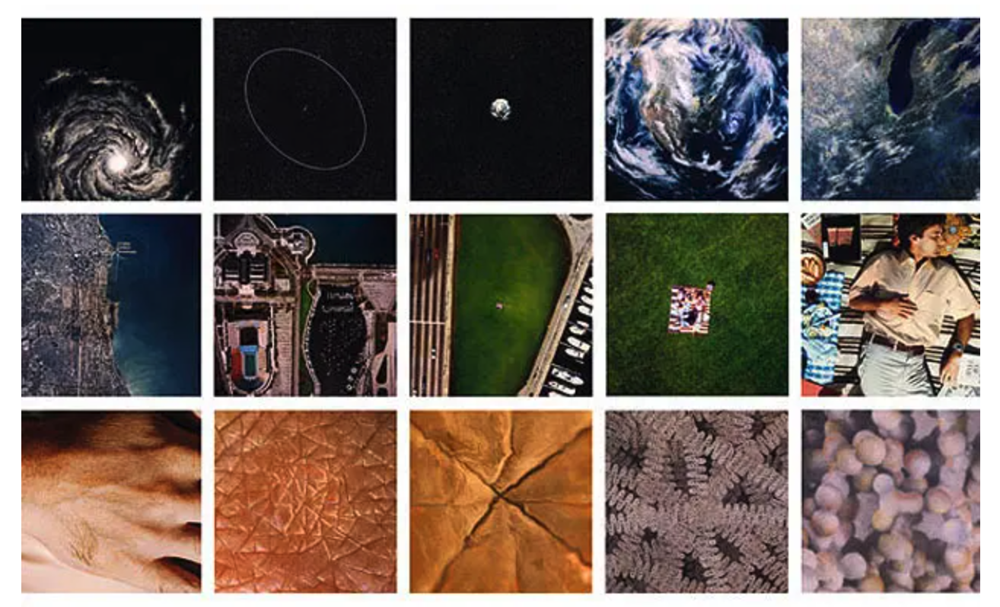
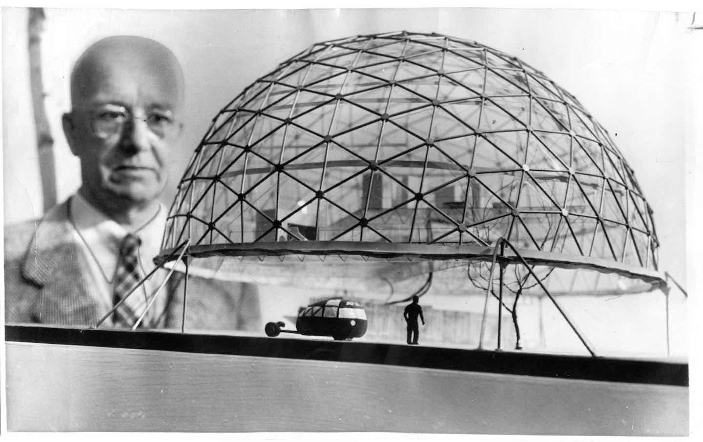
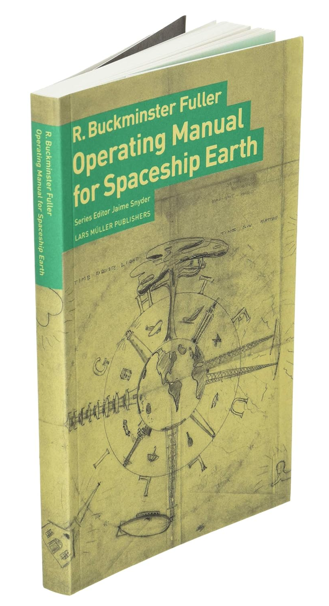
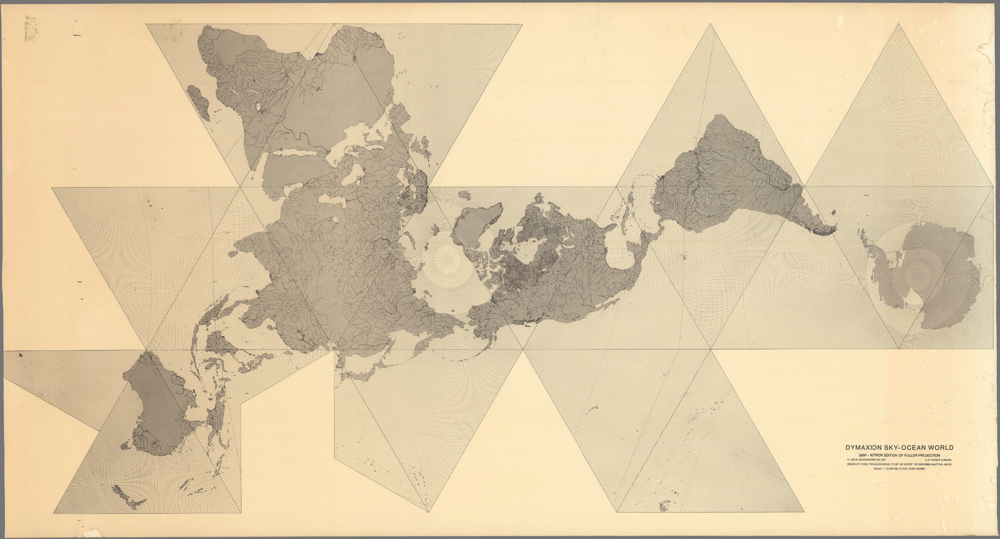
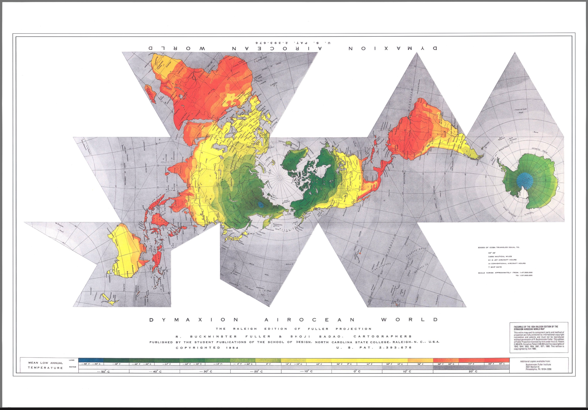

PUFY 1100 A31 Sustainable Systems 12953

Source: Orlando Ferguson - 1893
Orlando Ferguson’s Flat Earth Map | 1893
Ferguson’s map presents Earth according to a flat-Earth cosmology, combining geography with a particular belief about the planet’s physical form.
The map is useful not because it is geographically accurate, but because it makes something explicit:
A map does not simply show the Earth. It represents an idea of what the Earth is.
Apollo 8 | December 24, 1968
For the first time, humans traveling around another planetary body looked back and witnessed the Earth rising above the lunar horizon.
What changes when Earth becomes something we can see?

Source: Earthrise
From space, Earth appears:
Seeing the whole Earth offered a radically different way of understanding our relationship to the planet.
More than half a century later, humans are once again looking back at Earth from deep space.
The image may be similar; our knowledge of the planet is not.
Source: Earthrise II

Source: Earthrise II
Earth is not simply an object.
It is an interaction between multiple systems:
Earth is a system of systems.

Our position can be understood at radically different scales:
Each change in scale reveals different relationships.
Each also causes other relationships to disappear.

Source: Eames Powers of Ten
A system looks different depending upon the scale at which we observe it.
Body → Building → Neighborhood → City → Region → Continent → Planet
Something that appears sustainable at one scale may produce consequences at another.
Most of us have inherited a familiar image of the world:
Why does this representation of Earth look “correct” to us?
Every representation establishes:
These choices influence what we perceive and how we understand relationships within a system.
Maps organize our understanding of Earth spatially.
But we also understand Earth through time.
What happens when we change the temporal scale?
100 years - A familiar human time scale.
We commonly understand sustainability through:
extraordinarily narrow period of planetary history.
Earth: approximately 4.54 billion years
Homo sapiens: approximately 300,000 years
Nearly all of Earth’s history exists outside human experience.
What happens when human time is placed within planetary time?
Consider:
Their meaning changes depending upon whether we examine them across:
decades → centuries → millennia → millions of years
Buckminster Fuller approached design through relationships between:

Source: Buckminster Fuller Institute
Fuller described humanity as passengers aboard Spaceship Earth.
The metaphor proposes a fundamental condition:
Earth is materially finite and interconnected.

Fuller’s Dymaxion Map begins with a different way of representing Earth:
Rather than accepting a single conventional world-map configuration, the Earth’s surface can be unfolded and rearranged.


Fuller’s Dymaxion configuration emphasizes the continuity of the Earth’s land masses.
Continents can be understood less as isolated territories and more as components of a connected planetary system.
Political divisions recede.
Geographic relationships emerge.
Same planet. Different system.
Dymaxion reframes Earth spatially.
Underland reframes Earth temporally through deep time.
Systems thinking asks us to reconsider: